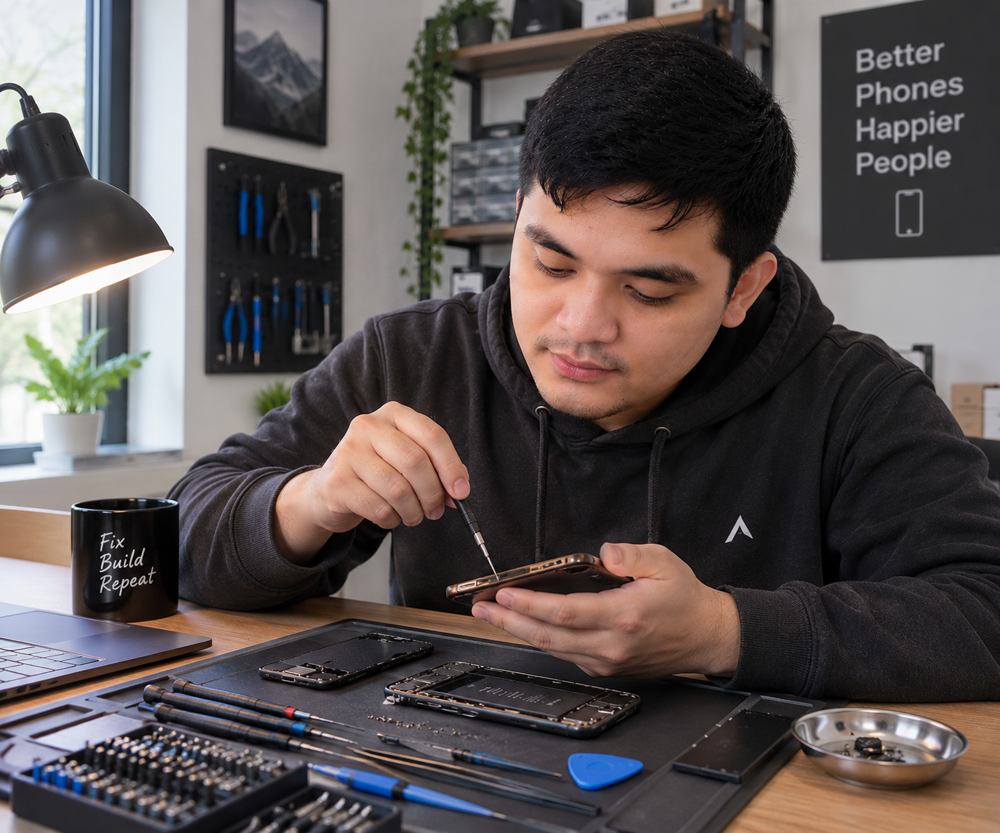
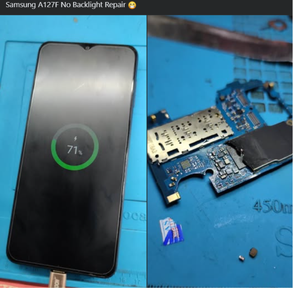
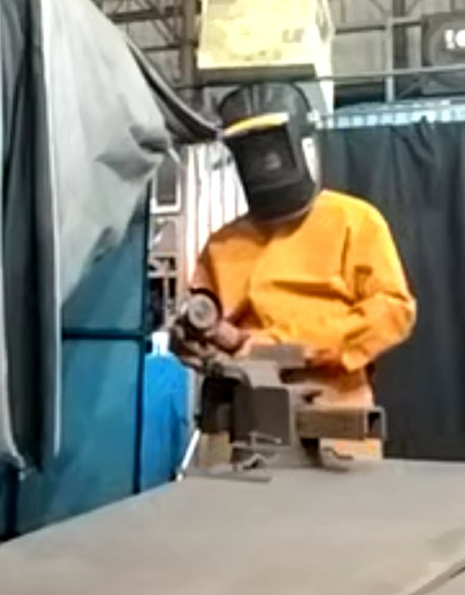

I'm currently learning front-end development, starting with HTML and CSS. I'm focused on building responsive, user-friendly websites and gradually expanding my skills through hands-on projects.


I have worked as a Phone Technician for over 10 years, handling a wide range of mobile device repairs including water-damage repairs, component replacement, diagnostics and general hardware troubleshooting. The experience amplified my problem-solving skills, attention to detail, patience and the ability to troubleshoot technical issues methodically. I also learned to recognize when a problem required a specialized equipment or expertise beyond what i had available. I'm now applying the same problem-solving mindset to learning front-end development and building websites with HTML and CSS.
I completed practical welding training that developed my precision and ability to follow technical procedures specified.
